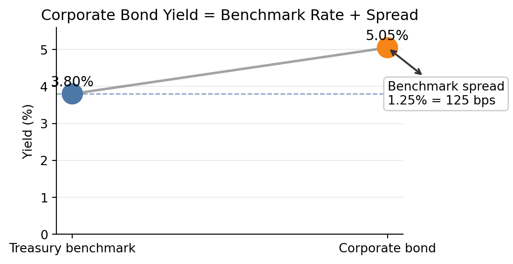
Lecture 4: Benchmark Spreads and the Term Structure of Interest Rates
Learning Objectives
By the end of this lecture you should be able to:
- Explain why a bond’s required yield can be decomposed into a base interest rate and a benchmark spread.
- Identify the main issuer, credit, tax, liquidity, financeability, option, and maturity characteristics that affect benchmark spreads.
- Distinguish between a yield curve and a theoretical spot rate curve.
- Explain why coupon bond yields are not the correct discount rates for valuing individual cash flows.
- Construct a simple Treasury spot rate curve by bootstrapping from Treasury bill and coupon security prices.
- Use spot rates to value a bond and to measure its spread over the Treasury curve.
- Derive forward rates from spot rates and interpret forward rates as hedgeable break-even rates.
- Compare the pure expectations, liquidity, preferred habitat, and market segmentation theories of the term structure.
- Explain why swap rates are widely used as benchmark rates in fixed income markets.
- Design curve strategies based on the shape of the yield curve and a trader’s view about future curve movements.
1 Base Interest Rate
The base interest rate is the benchmark rate used as the starting point for valuing a bond. It is meant to represent the return required on a security with minimal default risk over the same maturity or cash-flow horizon.
In U.S. dollar fixed income markets, the base rate is often taken from:
- U.S. Treasury rates,
- the Treasury spot rate curve,
- the swap rate curve, or
- overnight indexed swap rates for collateralized derivative valuation.
The base rate is not the full required yield on most bonds. A corporate bond, municipal bond, mortgage-backed security, or structured product usually requires compensation for additional risks and contractual features. The required yield can be summarized as:
\[ \text{Required yield} = \text{Base interest rate} + \text{Benchmark spread}. \]
This decomposition is useful because it separates broad market interest-rate risk from issuer-specific and security-specific risk.
NoteConceptual Example
Suppose the 5-year Treasury yield is 3.80% and a 5-year industrial corporate bond trades at a yield of 5.05%.
\[ \text{Benchmark spread} = 5.05\% - 3.80\% = 1.25\%. \]
The bond trades at a spread of 125 basis points over the 5-year Treasury benchmark.
2 Benchmark Spread
The benchmark spread is the yield difference between a bond and a benchmark security or benchmark curve. It compensates investors for risks and features not captured by the base interest rate.
For a simple bond quoted against a Treasury benchmark:
\[ \text{Benchmark spread} = y_{\text{bond}} - y_{\text{benchmark}}. \]
If the corporate bond yield is 6.20% and the Treasury benchmark yield is 4.70%, the benchmark spread is:
\[ 6.20\% - 4.70\% = 1.50\% = 150 \text{ basis points}. \]
The spread is not fixed. It changes as credit conditions, market liquidity, investor risk appetite, and the bond’s own characteristics change.
2.1 Types of Issuers
Different issuer types usually trade at different spreads because investors assign different risks and legal protections to each sector.
Common issuer categories include:
- sovereign governments,
- government agencies,
- supranational institutions,
- municipalities,
- financial corporations,
- industrial corporations,
- utilities,
- structured finance issuers,
- mortgage-backed security issuers.
Treasury securities usually define the lowest-yielding benchmark in the domestic currency because they are backed by the sovereign taxing authority and are highly liquid. Corporate bonds trade at positive spreads because investors require compensation for default risk, downgrade risk, and lower liquidity.
NoteIssuer Spread Example
Assume the 10-year Treasury yield is 4.00%. Three 10-year bonds trade at:
| Issuer type | Yield | Spread over Treasury |
|---|---|---|
| Federal agency | 4.35% | 35 bps |
| Utility company | 4.95% | 95 bps |
| High-yield industrial company | 7.25% | 325 bps |
The spread increases as investors require more compensation for credit and liquidity risk.
2.2 Perceived Creditworthiness of Issuer
Creditworthiness is the market’s assessment of the issuer’s ability and willingness to make promised payments. It depends on:
- leverage (e.g., high debt-to-EBITDA versus low debt-to-EBITDA),
- earnings stability (e.g., predictable utility earnings versus cyclical commodity earnings),
- cash-flow coverage (e.g., strong interest coverage versus weak interest coverage),
- asset quality (e.g., liquid collateral versus specialized assets with few buyers),
- business risk (e.g., diversified revenue versus dependence on one product),
- industry cyclicality (e.g., consumer staples versus autos or airlines),
- legal protections for creditors (e.g., secured debt versus subordinated debt),
- recovery value if default occurs (e.g., high-value collateral versus limited recoverable assets).
Credit ratings summarize some of this information, but market spreads often react faster than ratings. A widening spread can signal that investors are demanding more compensation for default or downgrade risk.
NoteCredit Spread Example
A 7-year A-rated bond trades at 85 bps over Treasuries. A similar BBB-rated bond from the same sector trades at 145 bps. The 60 bps difference reflects the market’s higher required compensation for the weaker credit profile.
2.3 Inclusion of Options
Embedded options change a bond’s cash flows and therefore affect its benchmark spread. The direction of the effect depends on who benefits from the option.
An option that is favorable to the issuer usually increases the required benchmark spread. A callable bond, for example, gives the issuer the right to redeem the bond before maturity. If interest rates fall, the issuer can call the bond and refinance at a lower rate, limiting the investor’s price upside. Investors therefore require extra spread compensation for accepting call risk and reinvestment risk.
An option that is favorable to the investor usually lowers the required benchmark spread. A putable bond gives the investor the right to sell the bond back to the issuer at a specified price. A convertible bond gives the investor the right to convert the bond into equity. Because these options have value to the investor, the bond may trade at a lower yield than an otherwise comparable issue. In some cases, the yield may even be below the yield on a comparable benchmark security.
Because the benchmark spread includes compensation for embedded options, it can be misleading to compare raw spreads across bonds with different option features. Analysts therefore use the option-adjusted spread (OAS) to estimate the spread after removing the value of embedded options. OAS is not a simple yield calculation; it requires a valuation model for bonds with embedded options.
For now, the key idea is:
\[ \text{Benchmark spread} = \text{option-adjusted spread} + \text{value of embedded option effects}. \]
NoteEmbedded Option Spread Example
Suppose two corporate bonds are observed in the market:
| Bond | Rating | Embedded option | Possible spread effect |
|---|---|---|---|
| Bond A | AAA | Callable | Higher spread due to call risk |
| Bond B | AA | Putable or convertible | Lower spread because the option benefits investors |
Even though Bond B has the lower credit rating, it could trade at a lower benchmark spread than Bond A if Bond A’s callable feature adds enough compensation for call risk or if Bond B’s investor-friendly option is valuable enough.
2.4 Taxability of Interest
Tax treatment affects after-tax yield. Investors compare bonds based on what they keep after taxes, not only the quoted pretax yield.
For a taxable bond:
\[ \text{After-tax yield} = y_{\text{taxable}}(1 - t), \]
where \(t\) is the investor’s marginal tax rate.
For a tax-exempt municipal bond, investors often compute the taxable-equivalent yield:
\[ \text{Taxable-equivalent yield} = \frac{y_{\text{tax-exempt}}}{1 - t}. \]
NoteTaxable-Equivalent Yield Example
A municipal bond yields 3.00% and the investor’s marginal tax rate is 35%.
\[ \text{Taxable-equivalent yield} = \frac{0.0300}{1 - 0.35} = 0.0462. \]
The municipal bond is equivalent to a taxable bond yielding 4.62% for this investor.
2.5 Expected Liquidity of an Issue
Liquidity is the ability to buy or sell a bond quickly, in size, and at low transaction cost. Less liquid bonds usually require higher yields.
Liquidity depends on:
- issue size,
- dealer inventory,
- trading frequency,
- transparency of market prices,
- eligibility for major indexes,
- whether the bond is newly issued or seasoned,
- investor concentration.
The liquidity premium is often small in calm markets but can become large during stress.
NoteLiquidity Example
Two BBB-rated bonds have the same maturity and similar credit risk. Bond A is a $2 billion benchmark issue that trades daily. Bond B is a $150 million issue that rarely trades. If Bond A trades at 140 bps and Bond B trades at 175 bps over Treasuries, the 35 bps difference may largely reflect liquidity.
2.6 Financeability of an Issue
Financeability refers to how easily an issue can be used as collateral to borrow funds. This matters because portfolio managers often finance bond positions with borrowed money. Borrowing against the bond allows the manager to create leverage: the manager owns the bond, pledges it as collateral, and uses the borrowed funds to support a larger position.
The main secured financing market for this activity is the repurchase agreement market, usually called the repo market. In a repo transaction, the portfolio manager effectively borrows cash from a dealer and provides the security as collateral. The interest rate charged on the cash borrowing is the repo rate.
There is no single repo rate. Repo rates vary by:
- term of the repo loan,
- quality and liquidity of the collateral,
- haircut required by the cash lender,
- dealer demand for the specific issue,
- whether the issue is easy or difficult to source in the market.
Sometimes a dealer needs a specific security to cover a short position. In that case, the dealer may be willing to lend cash against that security at a repo rate below the general market repo rate. The issue is then said to trade special in the repo market. The lower repo rate gives the holder a financing advantage, so investors bid up the price of that issue. Because bond prices and yields move in opposite directions, the issue’s yield falls relative to otherwise comparable securities.
This is one reason on-the-run Treasury issues often yield less than nearby off-the-run Treasury issues. The observed spread may reflect both better liquidity and a financing advantage in the repo market.
NoteFinanceability Example
Suppose two Treasury notes have nearly the same maturity and credit risk:
| Issue | Cash yield | Repo rate | Financing status |
|---|---|---|---|
| On-the-run 5-year Treasury | 4.18% | 3.70% | Special collateral |
| Off-the-run 5-year Treasury | 4.28% | 4.10% | General collateral |
The on-the-run issue yields 10 bps less:
\[ 4.28\% - 4.18\% = 0.10\% = 10 \text{ bps}. \]
At first glance, the off-the-run issue looks more attractive because it has the higher yield. But a leveraged investor also cares about the cost of financing the position. A simple way to see the financing advantage is to compare the yield earned on the bond with the repo rate paid to finance it:
\[ \text{Financing carry} = \text{bond yield} - \text{repo rate}. \]
For the on-the-run issue:
\[ 4.18\% - 3.70\% = 0.48\%. \]
For the off-the-run issue:
\[ 4.28\% - 4.10\% = 0.18\%. \]
Even though the on-the-run Treasury has a lower cash yield, it provides 30 bps more financing carry:
\[ 0.48\% - 0.18\% = 0.30\% = 30 \text{ bps}. \]
Investors may therefore accept the lower yield on the on-the-run issue because its below-market repo rate makes it cheaper to finance. The yield spread between the two notes reflects not only liquidity, but also the value of this financing advantage.
2.7 Term to Maturity
The time remaining in a bond’s life is called its term to maturity, or simply its maturity. A bond’s price changes over its life as market yields change, and the size of that price change depends partly on maturity.
All else equal, the longer the term to maturity, the greater the bond’s price volatility for a given change in market yields. A 20-year bond is more sensitive to a yield change than a 2-year bond because more of its cash flows are received farther in the future.
Bonds are often grouped into three maturity sectors:
| Maturity sector | Term to maturity |
|---|---|
| Short term | 1 to 5 years |
| Intermediate term | 5 to 12 years |
| Long term | More than 12 years |
The yield difference between two maturity sectors is called a maturity spread. For example, the difference between a 10-year yield and a 2-year yield is a maturity spread. The relationship between yields on otherwise comparable securities with different maturities is called the term structure of interest rates.
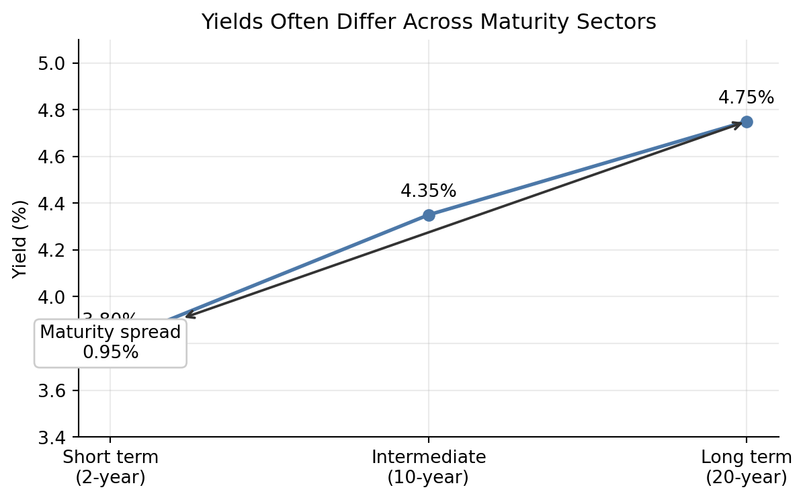
3 Term Structure of Interest Rate
The term structure of interest rates describes how interest rates vary across maturities. It is one of the central tools in fixed income valuation because bond cash flows occur at different dates.
A term structure can be expressed using:
- par yields,
- spot rates,
- forward rates,
- swap rates,
- credit spread curves.
Each curve answers a different question. A par yield curve tells us the coupon rate that would price a new bond at par. A spot rate curve gives the discount rate for a single cash flow at each maturity. A forward curve gives implied future rates between future dates.
3.1 Yield Curve
ImportantReview: Yield to Maturity
Yield to maturity (YTM) is the single discount rate that equates a bond’s market price to the present value of its promised cash flows:
\[ P = \sum_{t=1}^{n} \frac{CF_t}{(1+y)^t}. \]
For a plain coupon bond, the cash flows include periodic coupon payments and the repayment of face value at maturity. The YTM is therefore the bond’s internal rate of return if:
- the bond is held to maturity,
- all coupon payments are reinvested at the YTM,
- all promised payments are made on time.
Because most coupon bonds have many cash flows, YTM usually has to be solved numerically. It is a convenient summary yield, but it is not the same as the realized return unless the assumptions above are satisfied.
This distinction matters for yield curves. A point on a coupon-bond yield curve usually reports the YTM for a bond of a given maturity. That YTM summarizes all of the bond’s cash flows with one rate, even though the cash flows occur at different dates.
A yield curve plots yields against maturities. The most common version is the Treasury yield curve, which plots yields on Treasury securities from short maturities to long maturities.
Yield curves may be:
- upward sloping,
- flat,
- inverted,
- humped.
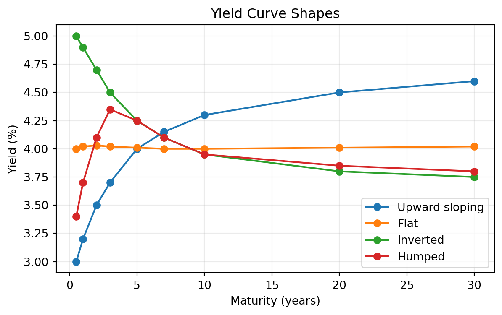
The shape of the yield curve often reflects market expectations about growth, inflation, and future central bank policy.
| Shape | Typical economy | Signal |
|---|---|---|
| Upward sloping | Expansion or recovery | Growth and inflation expectations are rising. |
| Flat | Transition period | The outlook is uncertain. |
| Inverted | Late cycle or recession risk | Policy is tight and rate cuts may be expected. |
| Humped | Uneven outlook | Near-term pressure is high, but longer-term expectations are lower. |
These interpretations are useful, but they are not mechanical rules. Yield curve shapes can also be affected by central bank purchases, liquidity conditions, Treasury supply, and investor demand for specific maturities.
3.2 Why the Yield Curve Should Not Be Used to Price a Bond
A coupon bond has multiple cash flows. A single yield-to-maturity applies one discount rate to all cash flows, but the market may require different discount rates for different cash-flow dates.
If a 5-year bond pays coupons every six months, it has 10 cash flows. The first coupon should be discounted using a 6-month rate, the second coupon using a 1-year rate, and so on. Using only the 5-year yield ignores the fact that the earlier cash flows are less risky with respect to time.
The correct discounting approach is:
\[ P = \sum_{t=1}^{n} \frac{CF_t}{(1 + z_t)^t}, \]
where \(z_t\) is the spot rate for maturity \(t\).
ImportantDefinition: Spot Rate
A spot rate (also called a zero-coupon rate) is the yield on a zero-coupon bond for a specific maturity. It represents the annualized return earned by investing in a zero-coupon security that pays no coupons—only a single payment at maturity. The spot rate for a given maturity reflects the market’s required rate of return for receiving a cash flow at exactly that future date, with no interim payments.
NoteWhy One Yield Can Misprice a Bond
Consider a 2-year annual-pay bond with $50 coupon payments and $1,000 principal. Suppose the 1-year spot rate is 3% and the 2-year spot rate is 5%.
Correct spot-rate price:
\[ P = \frac{50}{1.03} + \frac{1050}{1.05^2} = 1000.65. \]
If an investor incorrectly discounts both cash flows at the 2-year rate:
\[ P = \frac{50}{1.05} + \frac{1050}{1.05^2} = 999.72. \]
The difference is small in this simple example, but it becomes material for large portfolios, steep curves, and securities with unusual cash-flow timing.
3.3 Constructing the Theoretical Spot Rate Curve for Treasuries
The theoretical spot rate curve is the set of zero-coupon Treasury rates implied by Treasury market prices. It is called theoretical because most maturities do not have directly traded zero-coupon Treasury securities.
In practice, the starting point is a set of observed yields to maturity for Treasury bills, notes, and bonds. These observed yields are useful market summaries, but they are not homogeneous discount rates. Each yield depends on the security’s maturity, coupon rate, cash-flow timing, liquidity, tax treatment, and financing characteristics. A 10-year Treasury with a 1.50% coupon and a 10-year Treasury with a 4.50% coupon can have different yields even when they are exposed to similar Treasury discount rates.
Because yield to maturity is a single internal rate of return for all of a bond’s cash flows, it should not be used to discount individual future cash flows. To value a cash flow due in exactly 7 years, we need the 7-year spot rate, not the yield to maturity on a coupon bond whose cash flows occur over many dates.
The construction process is therefore:
- Observe Treasury yields to maturity across benchmark maturities.
- Fit a smooth par coupon curve from those observed yields.
- Interpolate the par coupon curve so that it has a rate at every needed cash-flow date.
- Bootstrap the theoretical spot rate curve from the smoothed and interpolated par coupon curve.
The par coupon curve is the set of coupon rates that would make hypothetical Treasury securities trade at par at each maturity. It is a more standardized curve than the raw observed YTM curve because each point refers to a par bond rather than to a specific seasoned Treasury issue.
Observed YTMs are first adjusted and smoothed to obtain benchmark par coupon rates. The smoothing step reduces issue-specific noise from liquidity, coupon, tax, and financing effects. The interpolation step fills missing maturities. For example, if the fitted par coupon rates are available at 1 year and 2 years but not at 1.5 years, linear interpolation gives:
\[ c_{1.5} = c_1 + \frac{1.5-1.0}{2.0-1.0}(c_2-c_1). \]
After the par coupon curve has been smoothed and interpolated, bootstrapping converts it into spot rates. With semiannual coupon payments, the annual par coupon rate at maturity \(m\) half-year periods is \(c_m\), so each semiannual coupon payment is \(c_m/2\) dollars per $100 face value. The par bond equation is:
\[ 100 = \sum_{j=1}^{m-1}\frac{c_m/2}{(1+z_j/2)^j} + \frac{100+c_m/2}{(1+z_m/2)^m}. \]
The earlier spot rates \(z_1,\ldots,z_{m-1}\) are already known from shorter maturities. The only unknown is \(z_m\), so the next spot rate can be solved recursively:
\[ z_m = 2\left[ \left( \frac{100+c_m/2} {100-\sum_{j=1}^{m-1}\frac{c_m/2}{(1+z_j/2)^j}} \right)^{1/m} -1 \right]. \]
NoteSemiannual Example: From YTM Curve to Par Curve to Spot Curve
Assume face value $100, semiannual coupon payments, and annualized rates quoted with semiannual compounding.
First, suppose we observe Treasury YTMs at standard benchmark maturities:
| Benchmark maturity | Observed YTM | Smoothed par coupon rate |
|---|---|---|
| 0.5 year | 3.58% | 3.60% |
| 1 year | 3.82% | 3.80% |
| 2 years | 4.08% | 4.10% |
| 3 years | 4.38% | 4.35% |
| 5 years | 4.57% | 4.60% |
| 7 years | 4.78% | 4.75% |
| 10 years | 4.88% | 4.90% |
The observed YTMs are not used directly as spot rates. They are first converted into a smooth par coupon curve. Then the missing half-year points are interpolated. For example:
\[ c_{1.5} = 3.80\% + \frac{1.5-1.0}{2.0-1.0}(4.10\%-3.80\%) = 3.95\%. \]
Similarly:
\[ c_{4.0} = 4.35\% + \frac{4.0-3.0}{5.0-3.0}(4.60\%-4.35\%) = 4.475\%. \]
Now bootstrap the spot rates from the half-year par coupon curve.
For the 6-month par bond, there is only one cash flow:
\[ 100 = \frac{100+3.60/2}{1+z_{0.5}/2}. \]
Solving gives:
\[ z_{0.5} = 3.600\%. \]
For the 1-year par bond, the annual par coupon is 3.80%, so each semiannual coupon is 1.90:
\[ 100 = \frac{1.90}{1+0.0360/2} + \frac{101.90}{(1+z_{1.0}/2)^2}. \]
Solving gives:
\[ z_{1.0} = 3.802\%. \]
For the 1.5-year par bond, the interpolated annual par coupon is 3.95%, so each semiannual coupon is 1.975:
\[ 100 = \frac{1.975}{1+0.0360/2} + \frac{1.975}{(1+0.03802/2)^2} + \frac{101.975}{(1+z_{1.5}/2)^3}. \]
Solving gives:
\[ z_{1.5} = 3.954\%. \]
The same recursion is repeated every six months through 10 years:
| Period | Maturity | Par coupon rate | Bootstrapped spot rate |
|---|---|---|---|
| 1 | 0.5 year | 3.600% | 3.600% |
| 2 | 1.0 year | 3.800% | 3.802% |
| 3 | 1.5 years | 3.950% | 3.954% |
| 4 | 2.0 years | 4.100% | 4.108% |
| 5 | 2.5 years | 4.225% | 4.237% |
| 6 | 3.0 years | 4.350% | 4.367% |
| 7 | 3.5 years | 4.412% | 4.432% |
| 8 | 4.0 years | 4.475% | 4.497% |
| 9 | 4.5 years | 4.537% | 4.564% |
| 10 | 5.0 years | 4.600% | 4.631% |
| 11 | 5.5 years | 4.637% | 4.671% |
| 12 | 6.0 years | 4.675% | 4.711% |
| 13 | 6.5 years | 4.713% | 4.752% |
| 14 | 7.0 years | 4.750% | 4.793% |
| 15 | 7.5 years | 4.775% | 4.820% |
| 16 | 8.0 years | 4.800% | 4.848% |
| 17 | 8.5 years | 4.825% | 4.876% |
| 18 | 9.0 years | 4.850% | 4.904% |
| 19 | 9.5 years | 4.875% | 4.933% |
| 20 | 10.0 years | 4.900% | 4.963% |
For example, at 10 years the annual par coupon is 4.90%, so each semiannual coupon is 2.45. The 10-year spot rate is solved from:
\[ 100 = \sum_{j=1}^{19} \frac{2.45}{(1+z_j/2)^j} + \frac{102.45}{(1+z_{10}/2)^{20}}. \]
Using the previously bootstrapped spot rates for periods 1 through 19 gives:
\[ z_{10} = 4.963\%. \]
The result is a theoretical spot curve at every six-month cash-flow date from 6 months to 10 years.
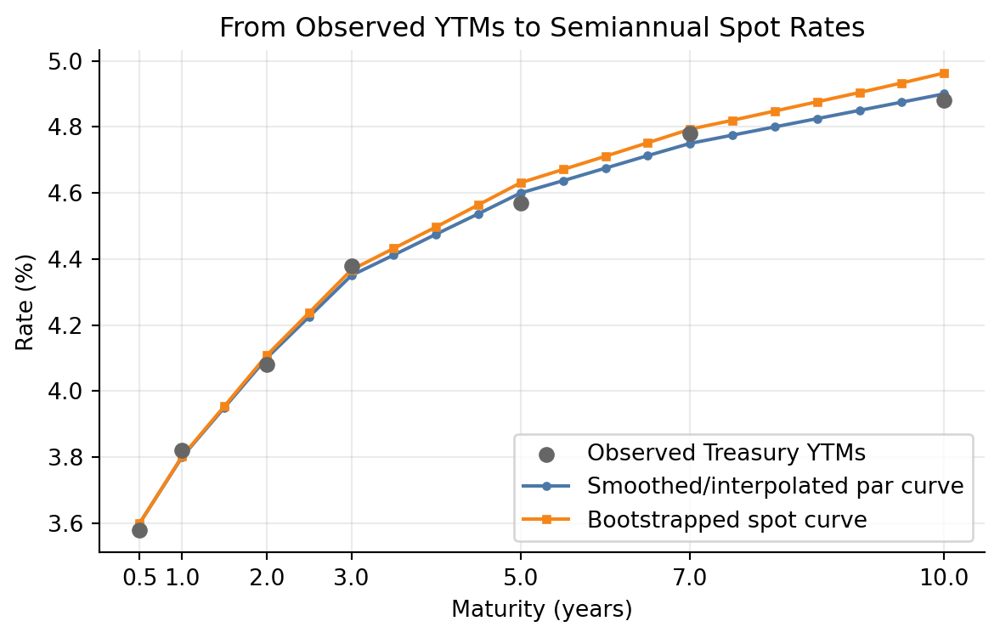
On-the-Run Treasury Issues
On-the-run Treasuries are the most recently issued Treasury securities at standard maturities. They are usually the most liquid securities in the Treasury market.
Advantages:
- They are highly liquid and actively quoted.
- Their prices are usually reliable and easy to observe.
- They are useful for market benchmarks and trader communication.
Disadvantages:
- There are only a few on-the-run maturities, so the curve has limited data points.
- They may trade rich because of liquidity and financing demand.
- Their yields may be lower than older issues for reasons unrelated to pure discount rates.
For example, the current 10-year Treasury note may yield 4.20%, while an older 9.8-year Treasury note may yield 4.25%. The 5 bps difference may reflect liquidity rather than a true difference in the Treasury spot rate.
NoteHow Often Treasury Securities Are Issued
Treasury auction patterns vary by maturity and can change with financing needs, but the standard pattern is approximately:
| Security | Maturities | Typical auction frequency |
|---|---|---|
| Bills | 4-, 6-, 8-, 13-, 17-, and 26-week | Weekly |
| Bills | 52-week | Every 4 weeks |
| Notes | 2-, 3-, 5-, and 7-year | Monthly |
| Notes | 10-year | Quarterly original issue, with reopenings in other months |
| Bonds | 20- and 30-year | Quarterly original issue, with reopenings in other months |
| TIPS | 5-, 10-, and 30-year | Less frequent; varies by maturity |
| FRNs | 2-year | Quarterly original issue, with reopenings in other months |
Source: U.S. Treasury auction schedule pattern.
On-the-Run and Selected Off-the-Run Treasury Issues
Off-the-run Treasuries are older Treasury securities that are no longer the most recently issued securities at their original maturities. A curve can be built using on-the-run securities plus selected off-the-run issues that are liquid and close to the desired maturities.
Advantages:
- More data points than an on-the-run-only curve.
- Better maturity coverage, especially between benchmark maturities.
- Less dependence on a small number of securities that may be unusually rich.
Disadvantages:
- Off-the-run issues are usually less liquid than on-the-run issues.
- Selection matters; including stale or special issues can distort the curve.
- Coupon, tax, and financing differences still need to be controlled.
All Treasury Coupon Securities and Bills
One approach to constructing the Treasury curve uses all available Treasury bills, notes, and bonds. This approach has more data points than an on-the-run curve.
Advantages:
- More observations across maturities.
- Less dependence on a small number of benchmark issues.
- Better ability to fit a smooth curve.
Disadvantages:
- Different issues may have different liquidity.
- Some issues may be rich or cheap due to supply and demand.
- Tax and financing effects may affect particular securities.
- Coupon effects can make YTMs difficult to compare directly.
In practice, curve construction often uses statistical fitting methods to smooth observed Treasury prices while controlling for outliers.
Treasury Coupon Strips
ImportantCoupon Bond as a Portfolio of Zero-Coupon Bonds
A coupon bond can be viewed as a package of separate zero-coupon bonds. Each promised cash flow is equivalent to a zero-coupon bond that pays exactly that amount on exactly that date.
For example, a 3-year annual-pay Treasury with a 5% coupon and $100 face value has the following cash flows:
| Date | Coupon payment | Principal payment | Total cash flow | Equivalent zero-coupon bond |
|---|---|---|---|---|
| Year 1 | $5 | $0 | $5 | 1-year zero paying $5 |
| Year 2 | $5 | $0 | $5 | 2-year zero paying $5 |
| Year 3 | $5 | $100 | $105 | 3-year zero paying $105 |
Therefore, the coupon bond’s value is the sum of the values of these zero-coupon components:
\[ P = \frac{5}{(1+z_1)} + \frac{5}{(1+z_2)^2} + \frac{105}{(1+z_3)^3}. \]
This is the key idea behind STRIPS. If the Treasury cash flows can be separated and traded individually, each separated cash flow behaves like a zero-coupon bond. Its price reveals the discount rate for that specific maturity.
Treasury STRIPS are securities created by separating Treasury coupon and principal payments into individual zero-coupon instruments. STRIPS provide direct market prices for zero-coupon cash flows.
Advantages:
- Each STRIP has one cash flow, so its yield is directly interpretable as a spot rate.
- Coupon effects are removed because there are no interim coupon payments.
- STRIPS are especially useful for estimating long-maturity zero-coupon rates.
Disadvantages:
- STRIPS may be less liquid than on-the-run Treasuries.
- STRIPS may reflect special supply-demand conditions from pension funds and long-duration investors.
- The STRIPS market may not provide enough reliable observations at every desired maturity.
NoteSTRIPS Example
Suppose a Treasury STRIP paying $100 in 10 years trades at $62.00.
The 10-year annual spot rate is:
\[ z_{10} = \left(\frac{100}{62}\right)^{1/10} - 1 = 4.91\%. \]
Because the STRIP has only one cash flow, its yield is directly interpretable as a spot rate.
3.4 Using the Theoretical Spot Rate Curve
The spot rate curve is used to discount each cash flow of a bond at the rate appropriate for that cash-flow date.
For cash flows \(CF_t\) and spot rates \(z_t\):
\[ P = \sum_{t=1}^{n} \frac{CF_t}{(1+z_t)^t}. \]
NoteSpot Curve Valuation Example
Consider a 3-year annual-pay Treasury with a 4% coupon and face value $100. Assume:
| Maturity | Spot rate |
|---|---|
| 1 year | 3.50% |
| 2 years | 4.00% |
| 3 years | 4.40% |
The price is:
\[ P = \frac{4}{1.035} + \frac{4}{1.04^2} + \frac{104}{1.044^3} = 98.54. \]
This price uses the correct discount rate for each cash-flow maturity.
Spot Rates and the Base Interest Rate
The base interest rate for a cash flow is best represented by the spot rate for that cash-flow date. A bond’s Treasury benchmark spread can therefore be measured relative to the spot curve rather than a single benchmark maturity.
If a risky bond has cash flows \(CF_t\), its price can be expressed as:
\[ P = \sum_{t=1}^{n} \frac{CF_t}{(1 + z_t + s)^t}, \]
where:
- \(z_t\) is the Treasury spot rate for maturity \(t\),
- \(s\) is the constant spread over the spot curve.
This spread is conceptually closer to valuation than a simple spread to one Treasury maturity because it respects the timing of each cash flow.
NoteExample: Spot Rates as Base Rates
Suppose a 2-year corporate bond promises annual cash flows of $5 in year 1 and $105 in year 2. The Treasury spot rates are:
| Maturity | Treasury spot rate |
|---|---|
| 1 year | 3.00% |
| 2 years | 3.50% |
If the bond had no credit or liquidity risk, the Treasury spot curve would give the base value:
\[ P_{\text{Treasury base}} = \frac{5}{1.03} + \frac{105}{1.035^2} = 102.91. \]
Now suppose investors require a constant 120 bps spread over the Treasury spot curve. The discount rates become 4.20% for year 1 and 4.70% for year 2:
\[ P_{\text{risky}} = \frac{5}{1.042} + \frac{105}{1.047^2} = 100.63. \]
The Treasury spot rates are the base interest rates for the cash-flow dates. The spread adjusts those base rates for the bond’s additional risks.
Forward Rates
A forward rate is an interest rate implied today for a loan or investment that begins in the future. Forward rates are derived from spot rates.
For annual compounding, the one-year forward rate from year 1 to year 2 is:
\[ 1 + f_{1,2} = \frac{(1+z_2)^2}{1+z_1}. \]
Forward rates are break-even rates. If investors can invest for two years at the 2-year spot rate or invest for one year and then reinvest for another year, the forward rate is the reinvestment rate that makes the two strategies equivalent.
NoteForward Rate Example
Suppose the 1-year spot rate is 4.00% and the 2-year spot rate is 4.80%.
\[ 1 + f_{1,2} = \frac{1.048^2}{1.04} = 1.0561. \]
The one-year forward rate beginning one year from now is 5.61%.
ImportantNo-Arbitrage Requirement for Forward Rates
Forward rates come from a no-arbitrage condition: two risk-free investment strategies that end at the same date must produce the same future value.
For example, investing for two years at the 2-year spot rate must match investing for one year at the 1-year spot rate and locking in the one-year forward rate from year 1 to year 2:
\[ (1+z_2)^2 = (1+z_1)(1+f_{1,2}). \]
Solving for the forward rate:
\[ 1+f_{1,2} = \frac{(1+z_2)^2}{1+z_1}. \]
Suppose the 1-year spot rate is 4.00% and the 2-year spot rate is 5.00%. The no-arbitrage forward rate is:
\[ 1+f_{1,2} = \frac{1.05^2}{1.04} = 1.0601, \]
so:
\[ f_{1,2} = 6.01\%. \]
If the market forward rate is too high, say 7.00%, an investor can:
- Borrow for two years at the 2-year spot rate.
- Invest for one year at the 1-year spot rate.
- Lock in reinvestment for year 2 at the 7.00% forward rate.
For each $100 borrowed, the amount owed after two years is:
\[ 100(1.05)^2 = 110.25. \]
The investment strategy grows to:
\[ 100(1.04)(1.07) = 111.28. \]
The arbitrage profit is:
\[ 111.28 - 110.25 = 1.03. \]
If the market forward rate is too low, investors would do the reverse: invest for two years at the 2-year spot rate and finance that position by borrowing for one year and locking in the low forward borrowing rate for year 2.
Relationship Between Six-Month Forward Rates and Spot Rates
Treasury notes and bonds pay semiannual coupons, so six-month rates are especially important.
Let \(z_t\) be the spot rate for maturity \(t\) six-month periods, stated as a six-month periodic rate. Let \(z_1\) be the current six-month spot rate, and let \(f_i\) be the six-month forward rate beginning \(i\) six-month periods from now.
The \(t\)-period spot rate is the geometric average of the current six-month spot rate and the sequence of six-month forward rates:
\[ z_t = \left[ (1+z_1)(1+f_1)(1+f_2)\cdots(1+f_{t-1}) \right]^{1/t} - 1. \]
The same relationship can be written as:
\[ (1+z_t)^t = (1+z_1)(1+f_1)(1+f_2)\cdots(1+f_{t-1}). \]
This means that investing for \(t\) six-month periods at the \(t\)-period spot rate must produce the same ending value as investing for six months at today’s six-month spot rate and then rolling the investment through the sequence of implied six-month forward rates.
Usually the starting point is not the forward curve. The starting point is the spot curve. Once the spot rates are known, the implied six-month forward rates are calculated from adjacent spot rates:
\[ 1+f_i = \frac{(1+z_{i+1})^{i+1}}{(1+z_i)^i}. \]
Equivalently:
\[ f_i = \frac{(1+z_{i+1})^{i+1}}{(1+z_i)^i} - 1. \]
The forward rate tells us the future six-month reinvestment rate that would make an investor indifferent between two strategies:
- invest today for \(i+1\) six-month periods at the spot rate \(z_{i+1}\), or
- invest today for \(i\) six-month periods at \(z_i\) and then reinvest for one more six-month period at \(f_i\).
NoteComplete Example: From Spot Rates to Forward Rates and Back
Suppose the current spot curve is:
| Period | Maturity | Spot rate per six months | Bond-equivalent spot rate |
|---|---|---|---|
| 1 | 0.5 year | 2.625% | 5.250% |
| 2 | 1.0 year | 2.750% | 5.500% |
| 3 | 1.5 years | 2.880% | 5.760% |
| 4 | 2.0 years | 3.077% | 6.154% |
| 5 | 2.5 years | 3.250% | 6.500% |
| 6 | 3.0 years | 3.427% | 6.855% |
| 7 | 3.5 years | 3.453% | 6.906% |
| 8 | 4.0 years | 3.578% | 7.155% |
| 9 | 4.5 years | 3.635% | 7.271% |
| 10 | 5.0 years | 3.660% | 7.321% |
The first implied six-month forward rate, \(f_1\), begins six months from now. It is calculated from the 6-month and 1-year spot rates:
\[ f_1 = \frac{(1.02750)^2}{1.02625} - 1 = 0.02875 = 2.875\%. \]
The second implied six-month forward rate, \(f_2\), begins one year from now. It is calculated from the 1-year and 1.5-year spot rates:
\[ f_2 = \frac{(1.02880)^3}{(1.02750)^2} - 1 = 0.03140 = 3.140\%. \]
Repeating the calculation produces the full forward curve:
| Forward rate | Period covered | Six-month rate |
|---|---|---|
| \(f_1\) | 0.5 to 1.0 year | 2.875% |
| \(f_2\) | 1.0 to 1.5 years | 3.140% |
| \(f_3\) | 1.5 to 2.0 years | 3.670% |
| \(f_4\) | 2.0 to 2.5 years | 3.945% |
| \(f_5\) | 2.5 to 3.0 years | 4.320% |
| \(f_6\) | 3.0 to 3.5 years | 3.605% |
| \(f_7\) | 3.5 to 4.0 years | 4.455% |
| \(f_8\) | 4.0 to 4.5 years | 4.100% |
| \(f_9\) | 4.5 to 5.0 years | 3.885% |
These forward rates are not new market observations. They are the rates implied by the spot curve. What they tell us is the break-even reinvestment path embedded in today’s spot rates. For example, the 5-year spot rate can be decomposed into today’s 6-month spot rate plus nine future six-month forward rates.
A 5-year maturity equals 10 six-month periods, so using the current 6-month spot rate and the nine forward rates:
\[ z_{10} = \left[ (1.02625)(1.02875)(1.03140)(1.03670)(1.03945) (1.04320)(1.03605)(1.04455)(1.04100)(1.03885) \right]^{1/10} - 1. \]
The product inside the brackets is:
\[ 1.43261. \]
Therefore:
\[ z_{10} = (1.43261)^{1/10} - 1 = 0.03660 = 3.660\%. \]
This is the 5-year spot rate stated as a six-month periodic rate. On a bond-equivalent annual basis, it is approximately:
\[ 2(3.660\%) = 7.320\%. \]
The calculation confirms internal consistency: the 5-year spot rate and the sequence of six-month forward rates describe the same total 5-year return. The forward curve is useful because it shows where the spot curve embeds higher or lower future short-rate assumptions. In this example, forward rates rise through \(f_5\), fall at \(f_6\), and then move unevenly afterward, information that is hidden inside the single 5-year spot rate.
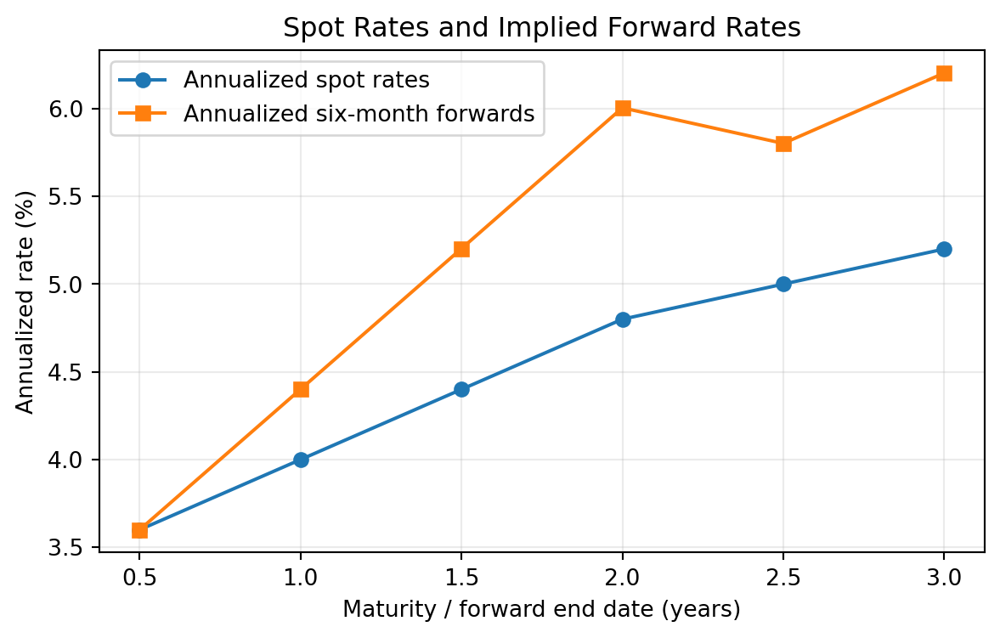
Other Forward Rates
Forward rates can be constructed for any future interval, not only one-year or six-month intervals.
The forward rate from time \(a\) to time \(b\) is:
\[ 1 + f_{a,b} = \left( \frac{(1+z_b)^b}{(1+z_a)^a} \right)^{1/(b-a)}. \]
This formula assumes annual compounding and maturities measured in years.
NoteTwo-Year Forward Rate Beginning Three Years from Now
Suppose the 3-year spot rate is 4.00% and the 5-year spot rate is 4.60%.
\[ 1 + f_{3,5} = \left( \frac{1.046^5}{1.040^3} \right)^{1/2}. \]
The 2-year forward rate beginning in year 3 is 5.51%.
Forward Rate as a Hedgeable Rate
A forward rate should not be interpreted mechanically as the market’s forecast of the future spot rate. Forward rates often do a poor job predicting realized future rates because risk premiums, liquidity effects, and changing macroeconomic conditions affect the curve.
Forward rates are still important because they are break-even rates. They tell an investor what future short rate would make two investment strategies equivalent. The investor can then compare that hedgeable break-even rate with their own expectation.
The intuition is simple: the forward rate is the future reinvestment rate already embedded in today’s spot curve. If an investor disagrees with that implied rate, they can choose the strategy that benefits from their view.
Some market participants therefore prefer to call forward rates hedgeable rates rather than market consensus forecasts. By buying a longer-maturity security today, an investor can hedge the risk that the future short rate is worse than the forward rate implied by the current curve.
NoteForward Rate as a Break-Even and Hedgeable Rate
Suppose an investor has a 1-year horizon and can choose between two strategies:
| Strategy | Description |
|---|---|
| Alternative 1 | Buy a 1-year Treasury today |
| Alternative 2 | Buy a 6-month Treasury today, then reinvest for another 6 months |
Assume:
- the 6-month spot rate is 5.00% on a bond-equivalent basis, or 2.50% for six months,
- the 1-year spot rate is 5.37% on a bond-equivalent basis, or 2.685% per six-month period.
The implied six-month forward rate beginning six months from now is:
\[ f_1 = \frac{(1.02685)^2}{1.0250} - 1 = 0.02875. \]
So:
\[ f_1 = 2.875\% \text{ for six months} = 5.75\% \text{ on a bond-equivalent basis}. \]
This 5.75% is not necessarily a forecast of the actual 6-month rate six months from now. It is the break-even reinvestment rate.
If the investor expects the 6-month rate six months from now to be less than 5.75%, Alternative 1 is better because the 1-year Treasury locks in a rate above the expected reinvestment rate.
If the investor expects the future 6-month rate to be greater than 5.75%, Alternative 2 is better because rolling the 6-month Treasury is expected to earn more.
By buying the 1-year Treasury, the investor hedges the uncertainty about the 6-month reinvestment rate six months from now. The investor no longer needs the future 6-month rate to be realized; the 1-year return is locked in today.
3.5 Determinants of the Shape of the Term Structure
The yield curve shape reflects several forces:
- market expectations about future short-term rates,
- compensation for interest-rate risk,
- investor demand for specific maturities,
- supply of securities at different maturities,
- central bank policy,
- inflation expectations,
- economic growth expectations,
- safe-haven demand,
- balance-sheet and regulatory constraints.
No single theory explains the curve at all times. In practice, the observed curve is the result of expectations, risk premiums, preferred maturity demand, and institutional constraints.
Pure Expectations Theory
The pure expectations theory states that forward rates reflect only expected future short-term rates. Under this theory, investors are risk neutral across maturities and do not require a maturity risk premium.
If the yield curve is upward sloping, the theory says the market expects future short-term rates to rise. If the yield curve is inverted, the market expects future short-term rates to fall.
The limitation is that long-term bonds are riskier than rolling short-term bonds, so investors usually require compensation for bearing duration risk.
Liquidity Theory
The liquidity theory states that investors prefer shorter maturities because short-term bonds have less price risk and are more liquid. Therefore, long-term bonds must offer a positive liquidity premium.
Under this theory:
\[ \text{Long-term rate} = \text{Expected average future short rates} + \text{Liquidity premium}. \]
The liquidity premium tends to make the yield curve slope upward even if expected future short rates are unchanged.
Preferred Habitat Theory
The preferred habitat theory says investors and borrowers prefer certain maturity ranges but can be induced to move outside those ranges if compensated.
For example:
- money market funds prefer short maturities,
- banks may prefer intermediate maturities,
- pension funds and insurers may prefer long maturities to match liabilities.
If long-maturity investors have strong demand for 30-year bonds, long-term yields may be lower than expectations alone would imply.
Market Segmentation Theory
The market segmentation theory is stronger than preferred habitat theory. It says different maturity sectors are largely separate markets, with yields determined by supply and demand in each maturity segment.
For example, the 2-year Treasury yield may be dominated by central bank policy expectations, while the 30-year Treasury yield may be dominated by pension demand, inflation uncertainty, and long-duration supply.
The limitation is that arbitrage and relative-value trading connect maturity sectors, so markets are not completely segmented.
3.6 The Main Influences on the Shape of the Yield Curve
In practice, the yield curve shape is driven by three broad forces: expected future rate changes, bond risk premiums, and convexity bias. The observed curve combines all three, so the shape of the curve should not be interpreted as a pure forecast of future short-term rates.
1. The Market’s Expectations of Future Rate Changes
Expected future short-term rates are a major driver of the yield curve. If investors expect central banks to raise policy rates, short- and intermediate-maturity yields usually rise. If investors expect future rate cuts, those maturities usually fall.
The intuition is that a longer-term yield reflects the return from holding a longer bond versus rolling over a sequence of shorter bonds. If the market expects future short rates to be higher, longer yields need to compensate investors for locking in today’s rate.
Examples:
- Expected monetary tightening can raise 1-year to 5-year yields and flatten or invert the curve.
- Expected monetary easing can pull down 2-year to 5-year yields and steepen the curve.
- A recession expectation can lower intermediate and long yields if investors expect future rate cuts.
3. Convexity Bias
Convexity bias arises because bond prices do not move linearly with yields. Long-duration bonds usually have more convexity, meaning their prices rise more when yields fall than they fall when yields rise by the same amount. This convexity has value.
The intuition is that investors may accept a lower yield on bonds with more desirable convexity, especially when rates are volatile. However, securities with negative convexity, such as callable bonds or mortgage-backed securities, usually require extra yield because their price upside is limited when rates fall.
Examples:
- A long Treasury bond may trade at a slightly lower yield than otherwise expected because investors value its positive convexity.
- A callable bond may trade at a higher yield because the issuer can call the bond when rates fall.
- Mortgage-backed securities can cheapen when rates fall because prepayment risk increases and investors lose some upside.
| Category | Main intuition | Example effect |
|---|---|---|
| Expectations of future rate changes | The curve embeds expected future short rates | Expected rate cuts can lower intermediate yields |
| Bond risk premiums | Investors require compensation for duration, inflation, liquidity, and supply risk | Higher inflation uncertainty can raise long yields |
| Convexity bias | Investors value or penalize nonlinear price behavior | Callable bonds require extra yield for negative convexity |
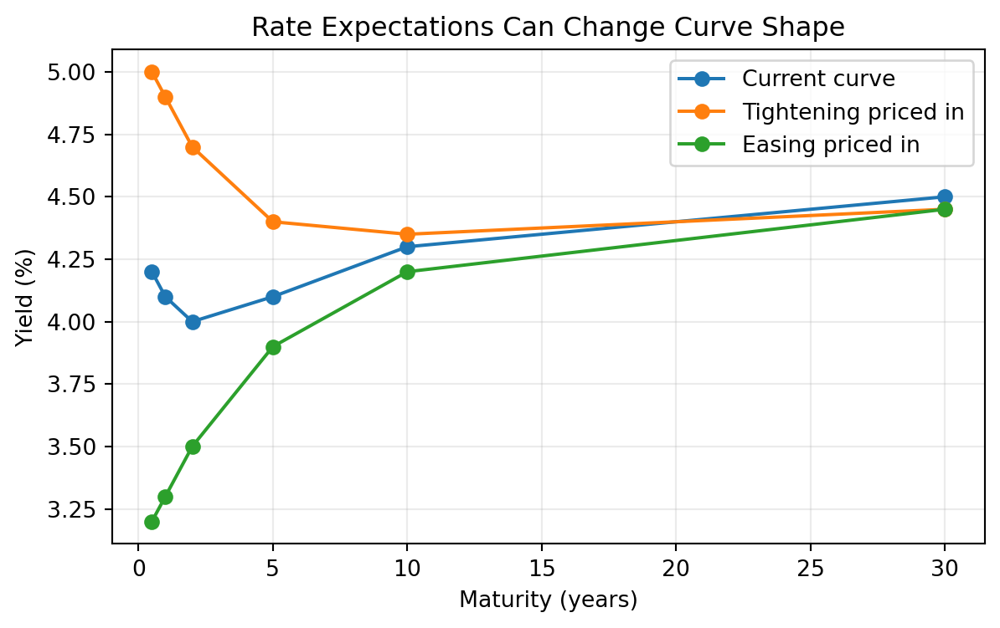
4 Swap Rate Yield Curve
ImportantDefinition: Interest Rate Swap
An interest rate swap is a contract in which two parties exchange interest payments based on a notional principal amount. In a plain-vanilla fixed-for-floating swap, one party pays a fixed interest rate and receives a floating reference rate; the other party receives the fixed rate and pays the floating rate.
For example, suppose two parties enter a 5-year swap with a notional principal of $100 million. Party A agrees to pay a fixed rate of 4.50% per year and receive 6-month SOFR. Party B receives the fixed 4.50% and pays 6-month SOFR. The $100 million notional is not exchanged; it is only used to calculate the interest payments.
Assume payments are exchanged semiannually. The fixed payment each six months is:
\[ \$100{,}000{,}000 \times \frac{4.50\%}{2} = \$2{,}250{,}000. \]
The floating payment changes with 6-month SOFR:
| Scenario for 6-month SOFR | Floating payment | Net cash flow |
|---|---|---|
| SOFR = 3.50% | $1,750,000 | Party A pays Party B $500,000 |
| SOFR = 4.50% | $2,250,000 | No net payment |
| SOFR = 5.50% | $2,750,000 | Party B pays Party A $500,000 |
Party A benefits when floating rates rise above 4.50% because it receives the higher floating payment while paying the fixed rate. Party B benefits when floating rates fall below 4.50% because it receives the fixed payment while paying the lower floating rate.
The swap rate yield curve plots fixed rates on plain-vanilla interest rate swaps across maturities. In a fixed-for-floating swap, one party pays a fixed rate and receives a floating reference rate, while the other party receives fixed and pays floating.
The swap rate is the fixed rate that makes the initial value of the swap approximately zero.
Swap curves are important because:
- swaps are actively traded across many maturities,
- swap rates are used to price corporate bonds and structured products,
- swaps reflect bank funding, collateral, and credit conditions,
- swap spreads compare swap rates with Treasury rates.
The swap spread is:
\[ \text{Swap spread} = \text{Swap rate} - \text{Treasury yield}. \]
NoteSwap Spread Example
Suppose the 10-year swap rate is 4.65% and the 10-year Treasury yield is 4.25%.
\[ \text{10-year swap spread} = 4.65\% - 4.25\% = 0.40\%. \]
The 10-year swap spread is 40 basis points.
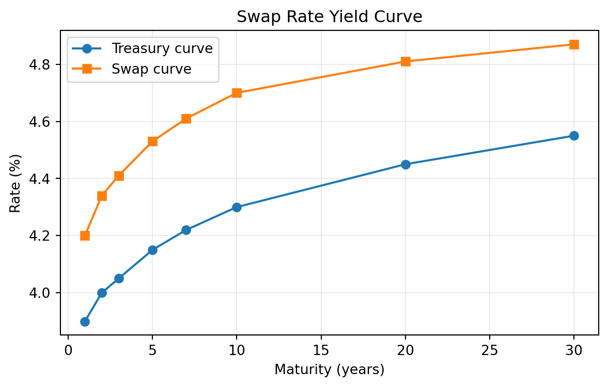
The swap curve is not risk free in the same way as a Treasury curve. It reflects the economics of collateralized derivatives markets, bank balance sheets, and floating-rate reference rates. However, it is often a better benchmark than Treasuries for valuing corporate and derivative-linked cash flows because many market participants hedge interest-rate risk using swaps rather than cash Treasuries.
5 Curve Strategies
Curve strategies use positions in bonds, futures, swaps, or other rate instruments to express a view about changes in the level, slope, or curvature of the yield curve.
The main idea is to separate:
- level risk: all rates move up or down together,
- slope risk: short and long rates move by different amounts,
- curvature risk: intermediate maturities move differently from short and long maturities.
Curve trades are often structured to be approximately duration neutral so the profit or loss depends mainly on curve shape rather than the overall level of rates.
5.1 Bull Steepener
A bull steepener is a strategy that benefits when yields fall and short-term yields fall more than long-term yields. This often occurs when the market expects central bank easing.
Example position:
- long 2-year Treasury notes,
- short 10-year Treasury notes in a duration-adjusted amount.
NoteBull Steepener Example
Suppose the 2-year yield is 4.80% and the 10-year yield is 4.20%. The 2s10s slope is:
\[ 4.20\% - 4.80\% = -0.60\%. \]
The curve is inverted by 60 bps. A trader expects recession risk to rise and the central bank to cut rates. One month later:
- 2-year yield falls to 4.10%,
- 10-year yield falls to 3.95%.
The new 2s10s slope is:
\[ 3.95\% - 4.10\% = -0.15\%. \]
The curve steepened by 45 bps. A long 2-year / short 10-year duration-neutral trade profits because the long 2-year position gains more from the larger yield decline than the short 10-year position loses.
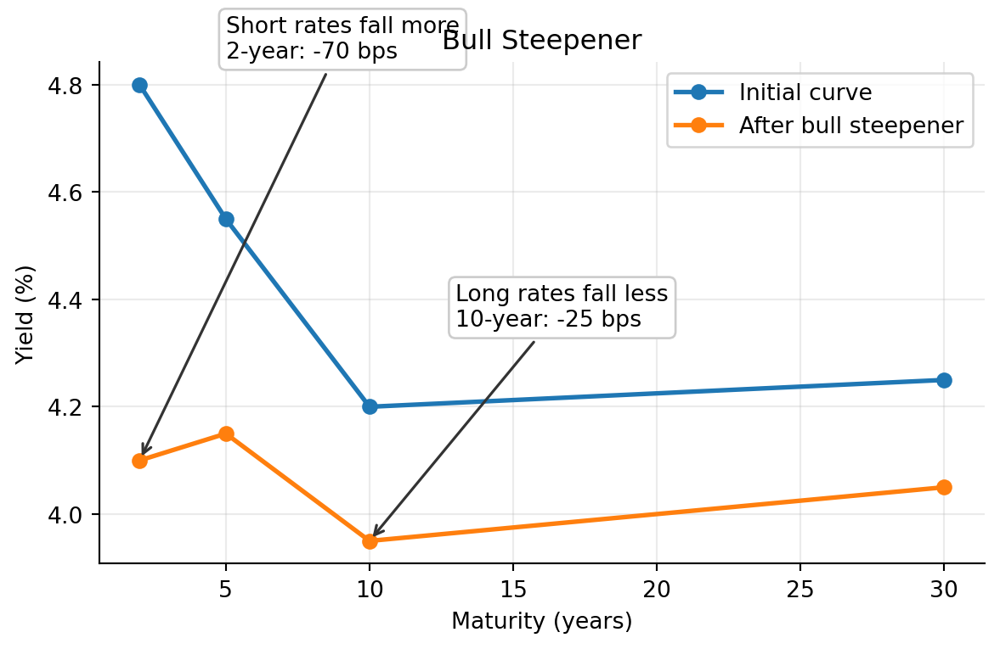
5.2 Bear Steepener
A bear steepener benefits when yields rise and long-term yields rise more than short-term yields. This can occur when inflation risk rises or investors demand a larger term premium.
Example position:
- short 30-year Treasury bonds,
- long 5-year Treasury notes in a duration-adjusted amount.
NoteBear Steepener Example
The 5-year yield is 4.00% and the 30-year yield is 4.40%, so the 5s30s slope is 40 bps. A trader believes long-term inflation risk is underpriced. Two weeks later:
- 5-year yield rises to 4.10%,
- 30-year yield rises to 4.80%.
The 5s30s slope becomes 70 bps. The curve steepened by 30 bps. A short long-bond position gains from the larger yield increase at the long end, while the long 5-year hedge loses less.
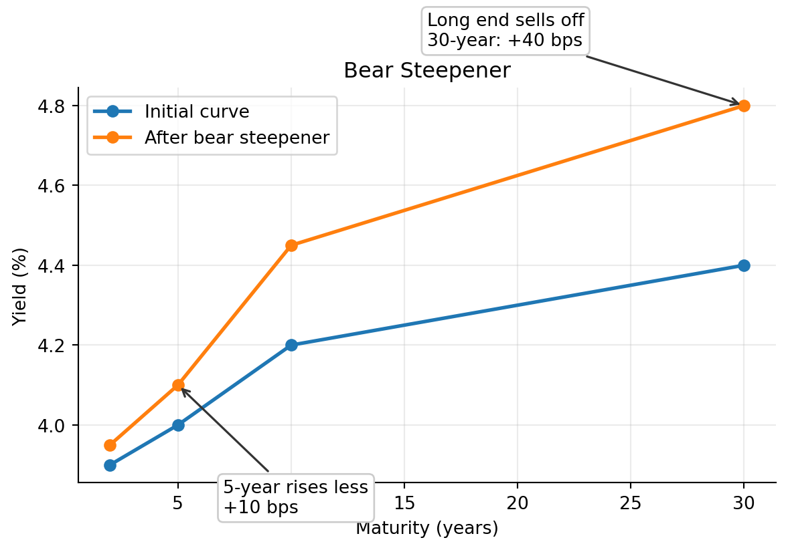
5.3 Bull Flattener
A bull flattener benefits when yields fall and long-term yields fall more than short-term yields. This often occurs when inflation expectations decline or investors seek duration.
Example position:
- long 10-year Treasury notes,
- short 2-year Treasury notes in a duration-adjusted amount.
If the 10-year yield falls by 50 bps while the 2-year yield falls by only 15 bps, the long 10-year position gains more than the short 2-year position loses.
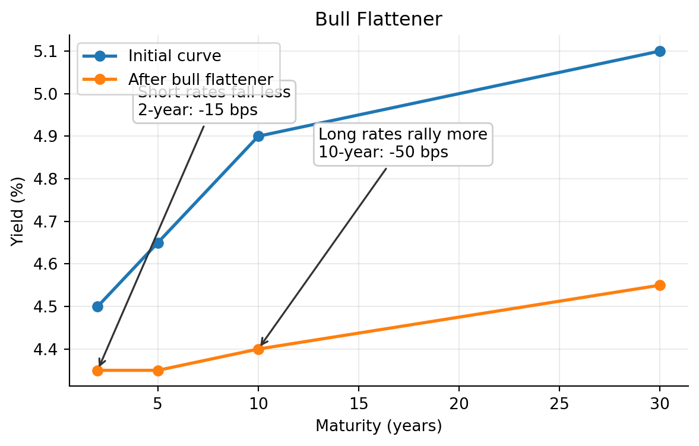
5.4 Bear Flattener
A bear flattener benefits when yields rise and short-term yields rise more than long-term yields. This often occurs when the central bank is expected to tighten policy.
Example position:
- short 2-year Treasury notes,
- long 10-year Treasury notes in a duration-adjusted amount.
If the 2-year yield rises by 75 bps and the 10-year yield rises by 25 bps, the curve flattens. The short 2-year position gains more than the long 10-year position loses.
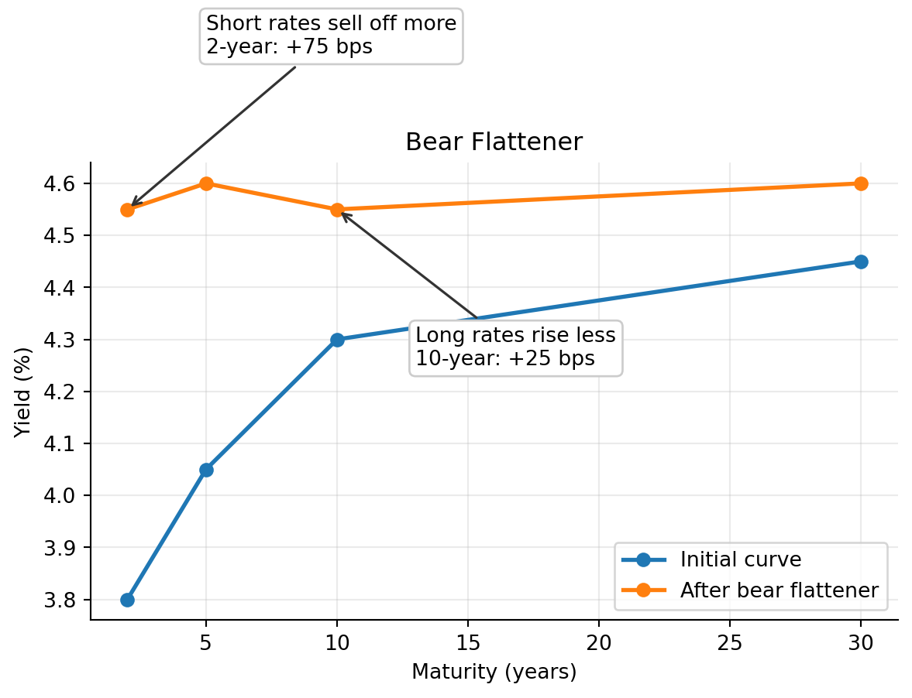
5.5 Butterfly Strategy
A butterfly strategy expresses a view on curvature. It compares an intermediate maturity with a weighted average of shorter and longer maturities.
A common 2s5s10s butterfly is:
\[ \text{Butterfly} = 2y_5 - y_2 - y_{10}. \]
If the 5-year yield is high relative to the 2-year and 10-year yields, the 5-year sector is cheap on the curve. A trader may buy 5-year notes and short 2-year and 10-year notes in duration-adjusted amounts.
NoteButterfly Example
Suppose:
| Maturity | Yield |
|---|---|
| 2-year | 4.00% |
| 5-year | 4.50% |
| 10-year | 4.30% |
The butterfly is:
\[ 2(4.50\%) - 4.00\% - 4.30\% = 0.70\%. \]
The 5-year point is high relative to the wings. A trader who expects the curve to become smoother may buy the 5-year note and short the 2-year and 10-year notes. If the 5-year yield later falls relative to the wings, the trade profits.
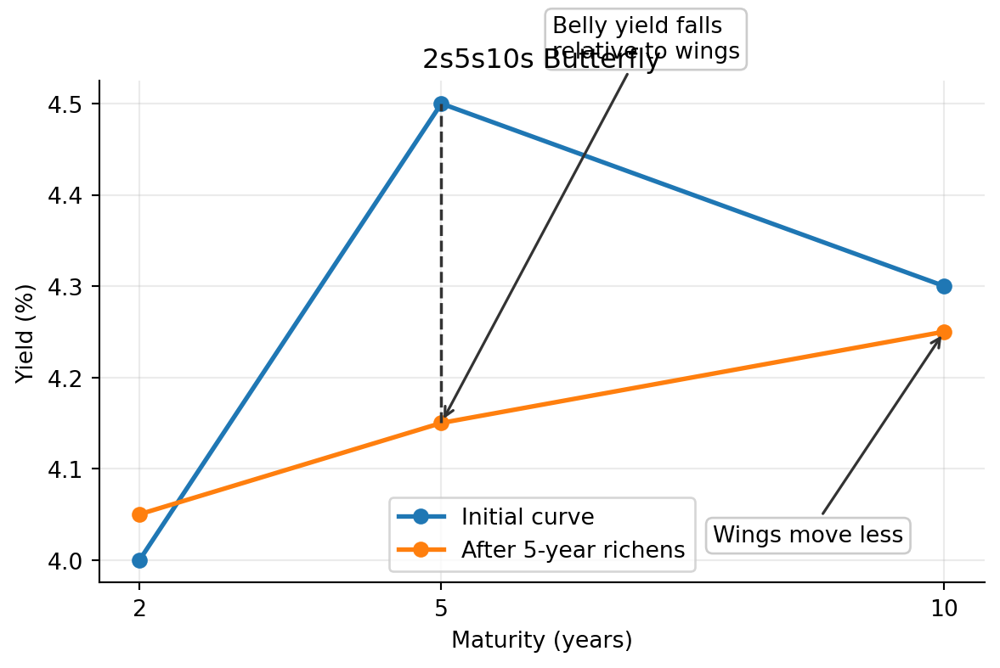
5.6 Carry and Roll-Down
Curve strategies are not driven only by future yield changes. They also earn or lose carry and roll-down.
Carry is the return from holding a position if the yield curve does not change. For a bond, carry includes coupon income minus financing cost.
Roll-down is the price effect from a bond moving to a shorter maturity on an unchanged yield curve. On an upward-sloping curve, a bond may roll down to a lower yield and gain price.
NoteCarry and Roll-Down Example
A 5-year Treasury yields 4.30%. The 4-year point on the curve yields 4.00%. If the curve is unchanged after one year, the bond is now a 4-year bond and its required yield falls by 30 bps. The investor earns coupon income and may also gain from roll-down.
However, if market yields rise enough, the mark-to-market loss can offset the carry and roll-down benefit.
5.7 Risk Controls in Curve Strategies
Curve strategies should be evaluated with explicit risk controls:
- duration exposure,
- key rate duration exposure,
- convexity exposure,
- financing cost,
- liquidity risk,
- stop-loss levels,
- scenario analysis.
A trade that appears to be a curve trade may still lose money if it has unintended exposure to the overall level of rates.
WarningImplementation Risk
A duration-neutral steepener is only neutral for small parallel shifts. It can still lose money if volatility rises, financing conditions change, the curve moves in an unexpected maturity sector, or the hedge instrument does not track the cash bond being hedged.
Broad Picture
Broad Picture: From Treasury Yields to Pricing and Hedging Rates
The main path is: observe Treasury YTMs, build the par curve, bootstrap the spot rate curve, then use spots and forwards.
1. Observe
Treasury issue prices and YTMs across maturities.
Raw YTMs Fail
A YTM is one IRR for a bundle of cash flows, not a one-date discount rate.
Observed Treasury yields are heterogeneous.
coupon
maturity
cash-flow
liquidity
tax
financing
→standardize
2. Par Curve
Move to par coupon space. Smooth the curve, interpolate missing maturities, and identify the coupon that prices each new Treasury at par.
→bootstrap
3. Spot Rate Curve
Bootstrap spot rates for each maturity: z0.5, z1, ..., z10.
↓use spots
↓derive
4. Price Cash Flows
Discount each cash flow using the spot rate for its payment date.
5. Derive Forwards
Forward rates describe future start dates and tenors implied by spot rates.
↓apply
6. Hedge or Trade
Use forwards to express views on future rates or hedge future rate exposure.
Key Points
- A bond’s required yield can be decomposed into a base interest rate plus a benchmark spread.
- Benchmark spreads compensate investors for issuer type, creditworthiness, embedded options, tax treatment, liquidity, financeability, and maturity.
- Issuer-friendly options, such as call options, usually increase benchmark spreads; investor-friendly options, such as put or conversion options, can reduce them.
- Option-adjusted spread removes the estimated value of embedded options from the observed benchmark spread.
- Longer-maturity bonds generally have greater price volatility, and yield differences across maturity sectors are called maturity spreads.
- A yield curve summarizes yields across maturities, but coupon bond YTMs are not homogeneous discount rates for individual cash flows.
- The theoretical Treasury spot rate curve is built by smoothing and interpolating the par coupon curve, then bootstrapping spot rates from the par curve.
- On-the-run Treasuries, selected off-the-run issues, all Treasury securities, and STRIPS each offer different tradeoffs for curve construction.
- Spot rates are the correct discount rates for valuing each cash flow at its own maturity.
- Forward rates are implied by spot rates; they are break-even and hedgeable rates, not reliable forecasts of future spot rates.
- The shape of the yield curve reflects expected future rate changes, bond risk premiums, and convexity bias.
- Term structure theories explain different parts of curve behavior: expectations, liquidity premiums, preferred habitats, and market segmentation.
- Swap rates are fixed rates on interest rate swaps and are widely used as benchmarks for valuation, hedging, and swap spread analysis.
- Curve strategies express views about level, slope, curvature, carry, and roll-down, but require explicit risk controls.